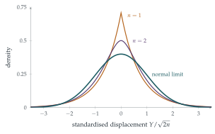

STEP III 2008, Question 12
Read the question before you go on. It is in the STEP Support Programme’s question database: step.maths.org/questions/08-s3-q12
The hook
Add up many small independent random effects, whatever their individual distribution, and the total follows the bell-shaped normal curve. This is the central limit theorem, perhaps the most important theorem in probability. It explains why heights, measurement errors and exam marks are roughly normal, and why statisticians can say how reliable an average is without knowing anything about the underlying distribution, provided it has a finite variance (compare Section 12.22).
This question proves the theorem in a special case. A frog makes random jumps with a two-sided exponential distribution, whose density has a sharp peak, nothing like a bell. After many jumps, his total displacement is normal. The tool is the moment generating function, which turns sums of independent variables into products, and products into sums by taking logarithms.
Moment generating functions were removed from the STEP specification in 2019. The moment generating function of a random variable \(X\) is \(\mathrm{M}_X(\theta) = \mathrm{E}(e^{\theta X})\). Its derivatives at \(0\) give the moments: \(\mathrm{M}'(0) = \mathrm{E}(X)\), \(\mathrm{M}''(0) = \mathrm{E}(X^2)\). For independent \(X\) and \(Y\), \(\mathrm{M}_{X+Y} = \mathrm{M}_X\mathrm{M}_Y\), and \(\mathrm{M}_{cX}(\theta) = \mathrm{M}_X(c\theta)\). If moment generating functions converge, so (in a suitable sense) do the distributions.
Before you start
The density \(\frac12e^{-|x|}\) is symmetric. What does it look like? What is its mean?
It is a tent-shaped curve with a sharp peak of height \(\frac12\) at \(0\), decaying exponentially on both sides (Figure 12.24.1). By symmetry the mean is \(0\).
Working it through
Stage 1 The moment generating function
For \(|\theta| < 1\), splitting the integral at \(0\), \[\mathrm{M}_X(\theta) = \frac12\int_{-\infty}^0e^{(1 + \theta)x}\,\mathrm{d}x + \frac12\int_0^\infty e^{-(1 - \theta)x}\,\mathrm{d}x = \frac12\Bigl(\frac{1}{1 + \theta} + \frac{1}{1 - \theta}\Bigr) = \frac{1}{1 - \theta^2}. \qed\] Expanding, \(\mathrm{M}_X(\theta) = 1 + \theta^2 + \theta^4 + \cdots\), so \(\mathrm{E}(X) = 0\) and \(\mathrm{E}(X^2) = 2\) (the coefficient of \(\frac{\theta^2}{2!}\)). The variance is \(2\).
Stage 2 The frog’s displacement
What is the moment generating function of \(Y = X_1 + \cdots + X_n\)? Of \(Y/\sqrt{2n}\)?
By independence \(\mathrm{M}_Y(\theta) = (1 - \theta^2)^{-n}\), and scaling, \[\mathrm{M}_{Y/\sqrt{2n}}(\theta) = \mathrm{M}_Y\Bigl(\frac{\theta}{\sqrt{2n}}\Bigr) = \Bigl(1 - \frac{\theta^2}{2n}\Bigr)^{-n}.\] (The scaling by \(\sqrt{2n}\), the standard deviation of \(Y\), makes the variance \(1\).)
Stage 3 The limit
Take the logarithm and use \(\ln(1 - u) \approx -u\) for small \(u\).
\(\ln\mathrm{M}_{Y/\sqrt{2n}}(\theta) = -n\ln\bigl(1 - \frac{\theta^2}{2n}\bigr) = -n\bigl(-\frac{\theta^2}{2n} - \frac{\theta^4}{8n^2} - \cdots\bigr) \to \frac{\theta^2}{2}\), so \[\mathrm{M}_{Y/\sqrt{2n}}(\theta) \to e^{\theta^2/2}, \qed\] the moment generating function of the standard normal distribution.
Stage 4 The frog’s chances
For large \(n\), \(Y\) is approximately \(\mathrm{N}(0, 2n)\). When is \(\mathrm{P}(|Y| \geq 25) = 0.05\)?
For a standard normal \(Z\), \(\mathrm{P}(|Z| \geq 1.96) = 0.05\). So we need \(\frac{25}{\sqrt{2n}} = 1.96\), giving \(2n = \bigl(\frac{25}{1.96}\bigr)^2 \approx 162.7\) and \(n \approx 81.3\). Since the chance of landing far away grows with \(n\), the least number of jumps giving at least a \(5\%\) chance is about \(82\).■

Looking back
Transforms turn sums into products. The moment generating function of a sum of independent variables is the product of theirs.
Logarithms turn products into sums. \(\ln\bigl(1 - \frac{\theta^2}{2n}\bigr)^{-n}\) became a sum whose limit was easy.
Standardise. Dividing by the standard deviation \(\sqrt{2n}\) kept the variance at \(1\), so the limit was neither \(0\) nor infinite.
What’s really going on
The general theorem
The same argument works for any distribution with mean \(0\) and finite variance \(\sigma^2\) (and a moment generating function, though this can be avoided). Then \(\mathrm{M}(\theta) = 1 + \frac12\sigma^2\theta^2 + o(\theta^2)\), and \[\Bigl(\mathrm{M}\Bigl(\frac{\theta}{\sigma\sqrt n}\Bigr)\Bigr)^n = \Bigl(1 + \frac{\theta^2}{2n} + o\Bigl(\frac1n\Bigr)\Bigr)^n \to e^{\theta^2/2}.\] Only the variance survives the limit: the shape of the original distribution is forgotten. That is why the normal distribution is universal. At university the theorem is proved with the characteristic function \(\mathrm{E}(e^{i\theta X})\), which always exists, and the convergence of distributions is made precise by Lévy’s continuity theorem.
How fast?
The central limit theorem says what happens in the limit, not how quickly. The Berry–Esseen theorem bounds the error by a constant times \(\frac{\mathrm{E}|X|^3}{\sigma^3\sqrt n}\). For a symmetric distribution like the frog’s, the approximation is good after a few dozen jumps. For skewed distributions, or in the extreme tails, it can be poor even for large \(n\): the normal approximation underestimates the chance of very rare events, a fact with consequences for insurance and finance.
De Moivre found the normal approximation to the binomial in 1733 (Section 12.23), and Laplace extended it to sums of more general variables in 1810, coining the idea that errors of measurement are sums of many small effects. Rigorous proofs came much later: Aleksandr Lyapunov in 1901, and Jarl Lindeberg in 1922, who found essentially the weakest conditions under which the theorem holds. The name “central limit theorem” was given by George Pólya in 1920, meaning that the theorem is central to probability theory.
The thinking skill
A hard operation (adding independent random variables, which convolves their densities) becomes an easy one (multiplication) after a transform. Do the work there, and interpret the result.
The same strategy underlies generating functions (Section 9.4), Fourier and Laplace transforms in analysis and engineering, and logarithms, which turn multiplication into addition.
Try this next
Exact for two jumps. Show that \(Y = X_1 + X_2\) has density \(\frac14(1 + |y|)e^{-|y|}\), and check its variance is \(4\).
Binomial to normal. For \(X \sim \mathrm{B}(1, \frac12)\) shifted to have mean \(0\) (taking values \(\pm\frac12\)), find \(\mathrm{M}_X(\theta) = \cosh\frac\theta2\), and show that the moment generating function of a standardised sum of \(n\) such variables tends to \(e^{\theta^2/2}\).
The frog, exactly. Use a computer (or the exact density for \(n = 2\) as a check) to see how accurate the normal approximation is for \(n = 82\).
Why not Cauchy? The Cauchy distribution (Section 12.22) has no moment generating function. Which step of the argument fails, and what happens to the average of \(n\) Cauchy variables?
Further reading
Geoffrey Grimmett & Dominic Welsh, Probability: An Introduction (Oxford University Press), the chapter on generating functions and limit theorems.
Hans Fischer, A History of the Central Limit Theorem (Springer). From Laplace to Lindeberg.
David Spiegelhalter, The Art of Statistics (Pelican), on why the normal distribution is everywhere.